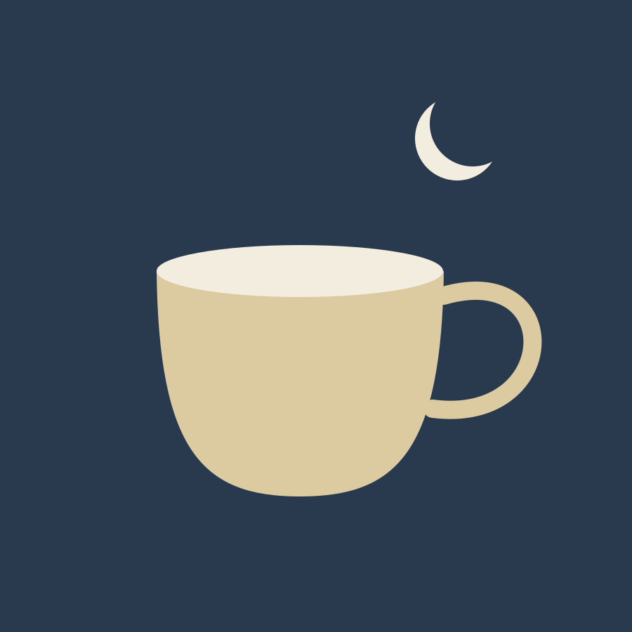
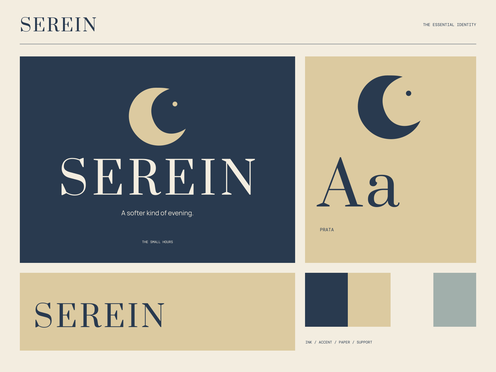

01
An evening, unhurried
A thoughtful place to let the day become something softer.
TEA / CONVERSATION / THE SMALL HOURS
A softer kind of evening. A little ceremony for the small hours.

A coherent little world
A little ceremony for the small hours. A softer kind of evening.
01
A thoughtful place to let the day become something softer.
02
Small, considered pleasures and a table worth lingering at.
03
Room for company, reflection, and the passing of time.

The point of view
Moonlit tea objects, celestial hairline diagrams, deep-blue packaging, and gracefully tracked serif capitals. A nocturnal world with unmistakable hospitality.